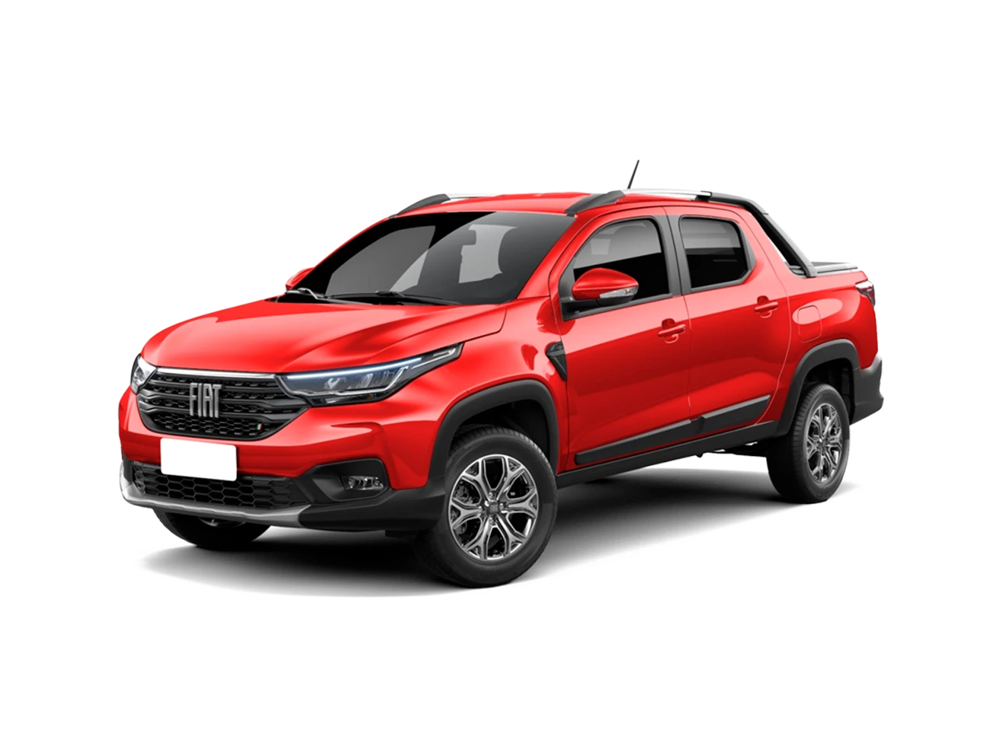
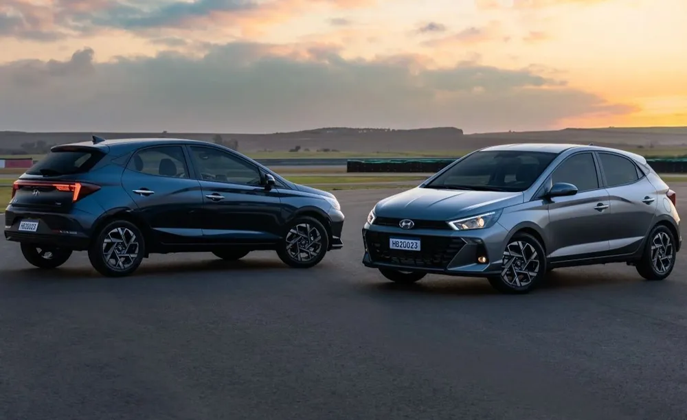
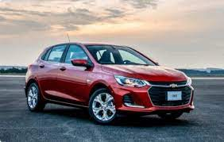

Sem surpresa alguma, a Fiat terminou o ano na liderança, com 22% de participação de mercado. Repetindo 2021, a Strada conquistou o topo do ranking entre automóveis e comerciais leves, com 112.456 unidades - superando o ano anterior, no qual a picape teve 109.107 emplacamentos.
Reestilizado em julho, o Hyundai HB20 aparece na segunda colocação, assim como no ano passado, com 96.255 carros (quase 10 mil unidades a mais que em 2021).
Ainda sofrendo com problemas de interrupções na produção por conta dos semicondutores, o Chevrolet Onix ainda não conseguiu recuperar os números de outrora, quando foi líder de vendas entre 2015 e 2020. Pelo menos conseguiu sair da quinta posição de 2021 para a terceira neste ano, com 85.252 exemplares emplacados.
